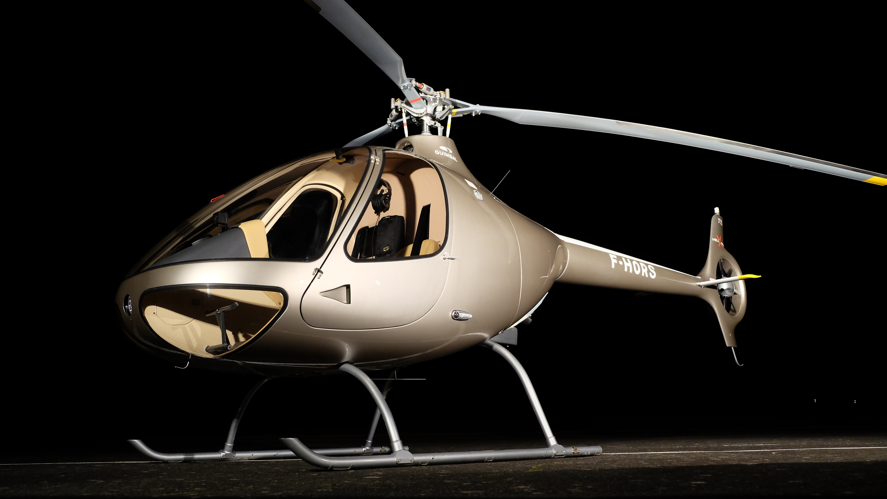
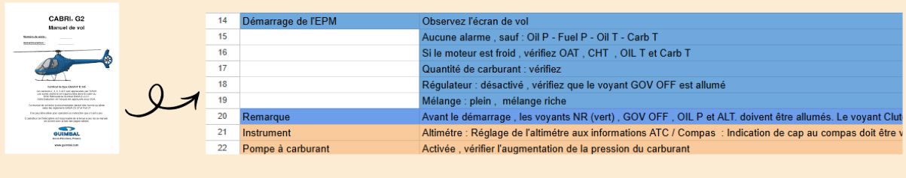
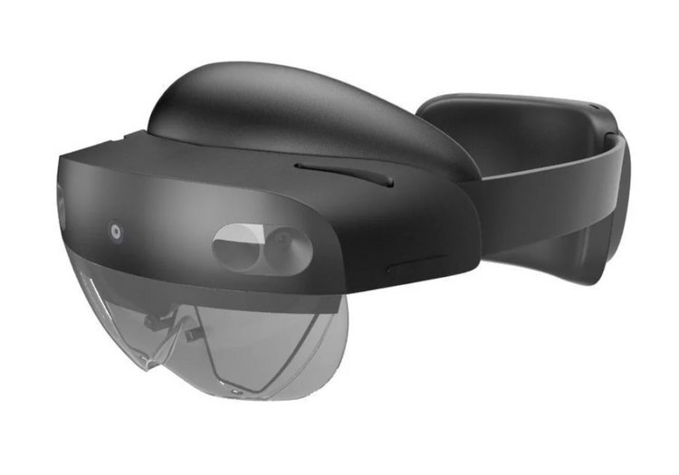
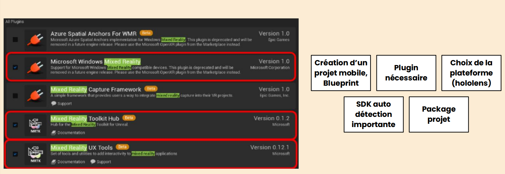
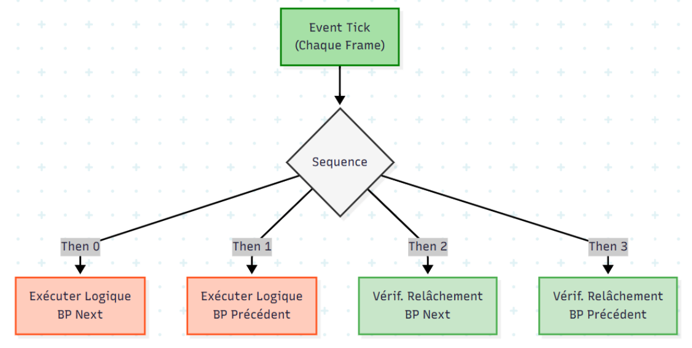
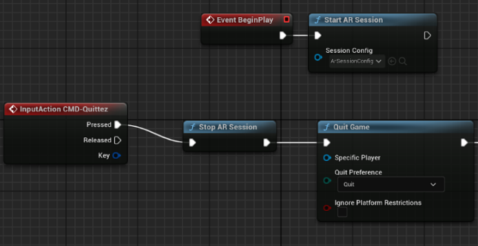
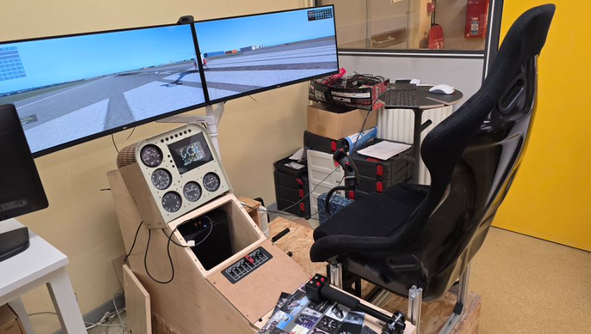

HoloCheck : Checklist Aéronautique en Réalité Mixte
HoloCheck est une application de Réalité Mixte conçue pour les pilotes d'hélicoptère Guimbal Cabri G2. Elle remplace le manuel papier traditionnel par une interface holographique interactive afin d'éliminer les "ruptures d'attention" et d'améliorer la sécurité lors des phases critiques de préparation de vol.

1. Analyse et Structuration des Données
Le projet a débuté par la transformation d'une documentation passive en une assistance active. J'ai segmenté les 35 étapes du manuel de vol original dans un tableau Excel pour créer une structure de données logique et séquentielle.

2. Environnement Matériel et Configuration
L'utilisation du casque Microsoft HoloLens 2 a été privilégiée pour sa puce HPU (Holographic Processing Unit) dédiée au traitement des hologrammes et ses capteurs de profondeur permettant le Spatial Mapping (cartographie 3D du cockpit).

Configuration logicielle (UE5)
Le développement a nécessité une configuration précise sous Unreal Engine 5.3, incluant l'activation des plugins MRTK (Mixed Reality Toolkit) et UX Tools pour la gestion native des interactions RM.

3. Preuve de Concept et Logique Automate
Avant de réaliser l'interface finale, un projet test ("Cube interactif") a permis de valider la prise en main d'Unreal Engine 5 ainsi que du casque HoloLens 2, notamment l'interaction par geste de pincement (pinch) via le composant uxt generic manipulator.

Logique de l'Automate Fonctionnel
L'application repose sur une machine à états rigoureuse développée en Blueprints. Un flux d'exécution Sequence est utilisé pour surveiller à chaque image (Event Tick) les interactions de l'utilisateur.


4. Implémentation de la Session AR
Le démarrage de l'expérience utilise un Pawn spécifique (MRPawn) qui initialise la session AR et active le tracking des mains dès le lancement de l'application.

5. Tests et Validation sur Simulateur
La validation finale a été effectuée sur le simulateur Cabri G2 de l'IUT de Cachan. L'utilisation du Holographic Remoting a permis d'ajuster en temps réel la position des hologrammes pour garantir une visibilité optimale des instruments réels.
